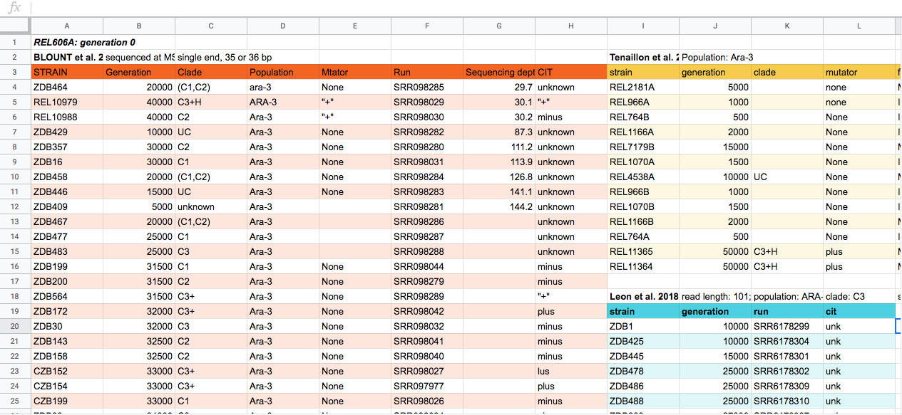

1 Organización de proyectos metagenómicos
1.0.1 En esta lección aprenderás:
- Estructurar tus metadatos y la información de tu experimento.
- Prepararte para entender, organizar y almacenar tus datos de secuenciación.
- Acceder y descargar datos de bases de datos.
1.1 Importancia del orden en experimentos
Cuando pensamos en los datos para un proyecto de secuenciación, solemos empezar por pensar en los datos de secuenciación que recibimos del centro de secuenciación, pero igual de importante, o incluso más, son los datos generados sobre las secuencias antes de que lleguen al centro. Estos datos se suelen denominar metadatos. Los datos de secuencia en sí mismos son inútiles sin la información sobre lo que secuenció.
La base de cualquier proyecto de investigación es el correcto orden de los datos. No solamente facilita el análisis sino que además permite compartir y colaborar con otros grupos. Documentar un proyecto que implica secuenciación de datos incluye varios componentes. Algunos de ellos incluyen la metadata de las condiciones del experimento, mediciones con los parámetros experimentales, preparación de secuenciación, información de las muestras, las propias secuencias y los archivos y flujos de cualquier análisis bioinformático. La organización de tus datos experimentales te prepara para ejecutar proyectos bioinformáticos de manera efectiva.
1.1.1 Contexto:
Este taller utiliza datos de un ensayo medio ambiental: Genomic adaptations in information processing underpins trophic strategy in a whole-ecosystem nutrient enrichment experiment de Jordan G. Okie y colaboradores. En este trabajo los autores comparan las diferencias entre las comunidades microbianas en sus medios naturales, oligotróficos y deficientes de fósforo, una poza de Cuatro Ciénegas y la misma comunidad microbiana bajo tratamiento de fertilización.
1.2 Discusión 1
En el archivo colaborativo de Etherpad, discute:
¿Qué tipos de datos e información ha generado antes de enviar su ADN/ARN para secuenciar?
1.3 Solución
Tipos de archivos e información que ha generado:
Hoja de cálculo o datos tabulares con los datos de su experimento y todo lo que estaba midiendo para su estudio.
Notas en el cuaderno de laboratorio sobre cómo realizó esos experimentos.
Datos en hojas de cálculo o tablas sobre las muestras enviadas para secuenciación. Los centros de secuenciación suelen tener un formato específico que requieren, con el nombre de la muestra, la concentración de ADN y otra información.
Anotaciones del cuaderno de laboratorio sobre cómo preparaste el ADN/ARN para la secuenciación y el tipo de secuenciación que estás realizando, por ejemplo, Illumina HiSeq de extremos emparejados. Probablemente también habrá otras ideas. ¿Esta información y datos fueron mayores de lo que esperabas?
1.4 Notas sobre su experimento
Las notas sobre su experimento, incluyendo cómo preparó sus muestras para la secuenciación, deben estar en su cuaderno de laboratorio, ya sea físico o electrónico. Para obtener más instrucciones sobre buenos cuadernos de laboratorio, consulte la sección sobre Gestión de Datos y Cuadernos de Laboratorio del Instituto Médico Howard Hughes “Making the Right Moves: A Practical Guide to Scientifıc Management for Postdocs and New Faculty”.
Incluir fechas en las páginas de su cuaderno de laboratorio, en las propias muestras y en cualquier registro sobre ellas le ayudará a asociar todo posteriormente. Usar fechas también ayuda a crear identificadores únicos, ya que, incluso si procesa la misma muestra dos veces, no suele hacerlo el mismo día o, si lo hace, lo sabe y les asigna nombres como A y B.
1.5 Identificadores únicos
Los identificadores únicos son nombres únicos para una muestra o un conjunto de datos de secuenciación. Son nombres que solo existen para esos datos. Tener estos nombres únicos facilita su posterior seguimiento.
1.6 Metadatos: Datos sobre el experimento
Los datos del experimento suelen recopilarse en hojas de cálculo , como Excel. Además de la hoja de cálculo, resulta práctico crear un archivo de texto llamado README . Este archivo contiene información sobre el proyecto de investigación, cómo se generaron las muestras y cómo leer la hoja de cálculo de metadatos. Esta información es muy práctica cuando se trabaja en equipo, ya que más personas se unen al proyecto incluso en las diferentes etapas del experimento. Este orden puede ayudar a tus colaboradores a comprender mejor la información.
1.7 Estándares de metadatos
El tipo de datos que se recopilarán depende del experimento. Dependiendo del área, se tienen formas específicas de estructurar sus metadatos, de modo que sean coherentes y se puedan entender y utilizar. El Centro de Curación Digital mantiene una lista de estándares de metadatos , y algunos de ellos, especialmente relevantes para los datos genómicos, están disponibles en el Consorcio de Estándares Genómicos . En particular, la calidad del ensamblaje y una estimación de la integridad y contaminación del genoma son estándares para los Genomas Ensamblados de Metagenoma (MAG).
La Universidad de Cornell nos proporciona una guía útil y un archivo de plantilla para escribir metadatos de estilo README en caso de que no existan estándares de metadatos para su tipo de datos. Al enviar datos a una organización, es posible que le proporcionen un archivo con especificaciones sobre
los metadatos necesarios para su plataforma. Por ejemplo, MG-RAST proporciona un archivo como este .
1.8 Discusión 2. ¿Qué información escribirías en tu archivo README?
Supongamos que en su campo aún no existen estándares de metadatos. Piense en la cantidad mínima de información que alguien necesitaría para poder trabajar con sus datos sin hablar con usted. ¿Qué tipo de información incluiría en su archivo README?
1.9 Solución
Algunos ejemplos de aclaraciones que deben escribirse en el README son:
- Formato de fecha (mm-dd-aaaa o dd-mm-aaaa, por ejemplo).
- Significado de abreviaturas.
- Significado o patrón seguido para construir los identificadores únicos de las muestras.
- Detalles sobre la metodología.
- Información de contacto de las personas que realizaron la recolección y/o experimentos.
- Significado de cada nombre de variable.
1.9.1 Estructuración de datos en hojas de cálculo
A menudo, introducimos datos que nos facilitan la lectura y el trabajo, ¡porque somos humanos! Las computadoras necesitan datos estructurados para poder utilizarlos. Por lo tanto, para usar estos datos en un flujo de trabajo computacional, debemos pensar como computadoras al usar hojas de cálculo.
Las reglas más importantes para utilizar programas de hojas de cálculo para datos:
- Deje los datos sin procesar, ¡no los modifique!
- Cada observación debe localizarse en su propia fila.
- Coloque todas sus variables en columnas. Las variables son la información que tenemos sobre nuestra muestra (genotipo, fenotipo, tratamiento, etc.).
- Los nombres de las columnas deben ser explicativos pero sin espacios. Use ‘-’, ‘_’ o mayúsculas y minúsculas en lugar de espacios. Por ejemplo, “library-prep-method” es mejor que “library Preparation Method” o “prep”, ya que los ordenadores interpretan los espacios de forma específica.
- Exporte los datos limpios a un formato de texto como
.csv(valores separados por comas). Este formato garantiza que cualquier persona pueda usar los datos que requieren la mayoría de los repositorios.

1.10 Discusión 3. Organización de hoja de cálculo en Excel
Estes es un ejemplo de una hoja de cálculo generada a partir de un experimento de secuenciación. En el documento colaborativo Etherpad, discute los problemas que identificas en esta hoja.
1.11 Solución
Esta hoja contiene una gran cantidad de potenciales errores. Haciendo algunos pequeños cambios puedes impactar positivamente la eficiencia y confianza durante la limpieza y análsis. A continuación encontrarás una lista de correcciones:
- Evitar usar multiples tablas.
- Evitar usar multiples pestañas.
- No rellenar con ceros.
- No usar valores nulos.
- No usar formatos de tablas (colores, negritas, etc).
- No dejar comentarios en las celdas.
- Evita usar espacios tanto en nombres de columnas como en valores de celdas.
- Cuidado con el formato de fechas.
1.12 Notas adicionales sobre la limpieza de los datos
¡No temas! Si ya comenzaste tu proyecto y no está configurado así, aún hay oportunidades para actualizarlo. Uno de los mayores desafíos son los datos tabulares que no están formateados para que las computadoras puedan usarlos o que presentan inconsistencias que dificultan su análisis.
Al trabajar en la línea de comandos, es problemático poner espacios en los nombres de directorios y archivos.
Se describe más práctica sobre cómo estructurar datos en nuestra lección de hoja de cálculo de ecología de carpintería de datos.
Herramientas como OpenRefine pueden ayudarle a limpiar sus datos.